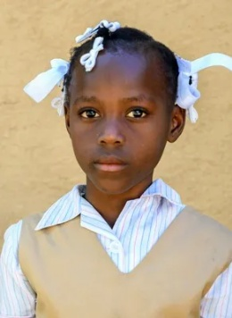

Cima School of Hope · Haïti

Ketia
Une jeune élève curieuse et créative
Découvrir son histoire
Ketia est une bonne élève qui aime particulièrement l’art et l’apprentissage des lettres.
En dehors de l’école, elle aide sa mère dans les tâches quotidiennes, notamment en allant chercher de l’eau au puits communautaire.
Grâce à un parrainage, Ketia pourra poursuivre sa scolarité dans les meilleures conditions.